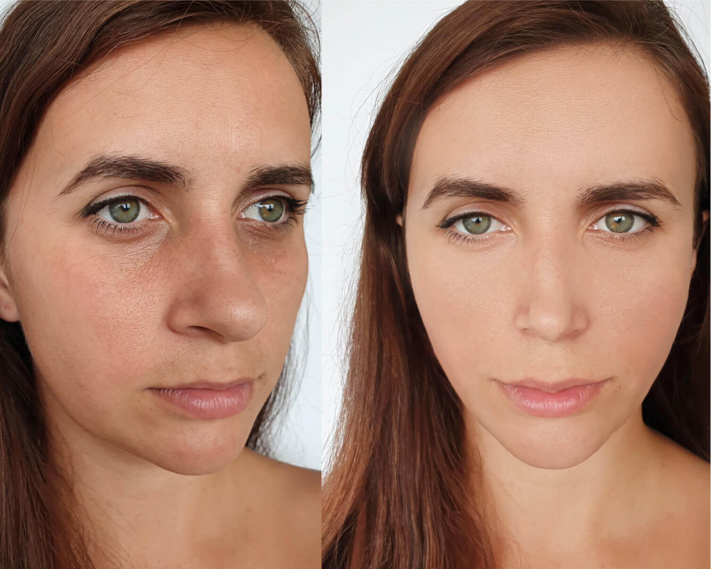
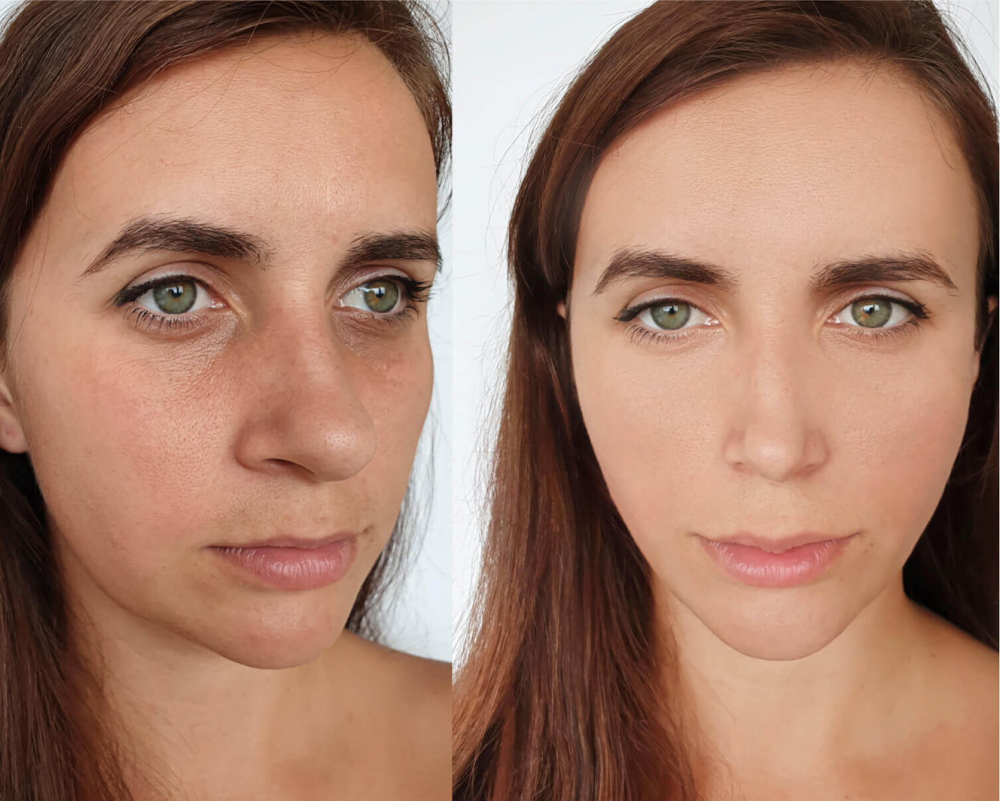

ora stanno leggendo
562
Pensavano che la mamma quarantasettenne fosse la fidanzata di suo figlio. Lei rivela il segreto della sua giovinezza
Questa storia incredibile è diventata rapidamente virale su internet. Tutto è iniziato quando il ventiduenne Riccardo Migliucci ha inviato un messaggio a una ragazza che gli piaceva, esprimendo il suo desiderio di incontrarli. La ragazza ha notato che Riccardo non era solo, sulla foto del suo profilo, e ha chiesto se la ragazza della foto non si sarebbe opposta alla loro conoscenza. La risposta di lui l’ha lasciata a bocca aperta: «Quella non è la mia ragazza, ma mia madre».
Inizialmente, la ragazza ha creduto che si trattasse di una ridicola scusa. Ma quando ha guardato meglio il profilo di Riccardo, ha scoperto che lui non mentiva: c'erano diverse foto con la didascalia «Mamma ed io» nelle quali lui posava con la stessa bellezza quarantasettenne: sua mamma Claudia Giannetti. È venuto fuori che non era la prima volta che Claudia è stata scambiata per la ragazza di suo figlio e che poi era stata bombardata di domande su come faceva a sembrare due volte più giovane di quanto non fosse. Molti sospettavano si trattasse di chirurgia plastica, ma la verità era tutt’altra.
Claudia, a giudicare dalle foto, non sei cambiata affatto, negli ultimi vent’anni. Posso farti una domanda, anche se forse ormai non ne potrai più di sentirtelo chiedere? Come ci riesci?
Grazie, innanzitutto: sono davvero lusingata. Naturalmente sono cambiata, oggi il mio stile e il mio modo di vestire sono decisamente migliorati. In secondo luogo, è tutta fortuna: sono sposata con un dermatologo.
Quindi la ragione della sua bellezza e giovinezza è lui?
Ovvio. È un esperto di dermatologia. Io non faccio che seguire i suoi consigli.
Se non è un segreto, di che consigli si tratta?
Le solite cose, quelle che avrete sentite tutti un migliaio di volte: riposo sufficiente, alimentazione sana... Ma mentirei, se dicessi che questo è tutto. Mio marito è uno specialista abilitato che collabora con diversi laboratori. Circa dieci anni fa, ha sviluppato una formula per il ringiovanimento, Io sono stata la prima volontaria a sottoporsi ai test. Al tempo, avevo 37 anni e chiaramente mi erano già comparse rughe, macchie di pigmentazione, tutte queste cose.
Quindi suo marito ha sviluppato il prodotto appositamente per lei?
All’inizio sì. Ogni volta che mi guardavo allo specchio ero più turbata. Continuavo a lamentarmi del fatto che mio marito è un esperto dermatologo, ma non può fare nulla per la mia pelle invecchiata. Le iniezioni cosmetiche erano per me inaccettabili: ero ben consapevole delle conseguenze dell'introduzione di sostanze chimiche sotto la pelle. In più, gli aghi mi terrorizzano. Quindi la formula che ha sviluppato ha fatto centro per diverse ragioni: in primo luogo, lui avrebbe avuto una donna giovane e bella. Secondo, io avrei smesso di lamentarmi. E poi rappresentava una sfida, per lui: da tempo desiderava sviluppare un suo prodotto che, diversamente da tutto ciò che si trovava sul mercato della cosmetica, soddisfacesse tutti i requisiti che lui riteneva essenziale per essere davvero efficace.
Il prodotto ha dato buoni risultati da subito?
La formula è stata testata e modificata più volte. Ma i primi risultati sono stati molto eloquenti già dopo il secondo o terzo test. Ho applicato quotidianamente per un mese e una bella mattina, guardandomi allo specchio, mi sono resa conto che le mie rughe erano sparite e la carnagione del mio viso era uniforme. Da allora e da ormai dieci anni, la mia pelle ha l’aspetto che vede.
Signor Migliucci, ci dica, come è riuscito a sviluppare una formula che dà risultati tanto straordinari? E come mai non la conosce quasi nessuno?
Per me, da specialista, nella formula non c’è davvero nulla di complicato: bisogna solo sapere come funzionano il corpo umano e soprattutto, la pelle. Per quanto riguarda la sua seconda domanda: è molto nota, io la consiglio ai miei pazienti, loro ai loro amici, ecc. Ma bisogna capire che il mercato moderno è pieno di cosmetici. Le grandi aziende investono somme enormi in marketing e pubblicità, ed è impossibile farsi strada nel rumore informativo che creano.
Lei ha menzionato che dobbiamo sapere come funziona la pelle umana. Ma lei potrebbe spiegarci il processo in maniera semplice?
A partire dai 25 anni, si comincia a perdere ogni anno circa l'1% del contenuto di collagene nella pelle, che è uno dei «mattoni» dell'epidermide. Questo porta a una specie di «disorganizzazione» della sua struttura, che ne viene sconvolta. Inoltre, i processi rigenerativi della pelle e dell'intero organismo si rallentano. Cioè, il nuovo materiale da costruzione si riduce, mentre quello vecchio decade senza rigenerarsi. Questo porta a una minore elasticità, quindi al rilassamento della pelle, alla perdita di volume e infine alla formazione di rughe profonde.
Come funziona, questa formula?
Se il corpo non può produrre collagene, deve essere aiutato. Ecco perché la formula è arricchita con una maggiore quantità di collagene. Ma come sa, il collagene in più influisce solo sulle conseguenze del problema e a noi interessa sua causa, quindi dobbiamo stimolare la sintesi di nuovo collagene e di nuove fibre.
Abbiamo cercato la soluzione migliore per un po' e nella nostra prima versione della formula abbiamo usato il retinolo. Tuttavia, i risultati dei test hanno mostrato che il retinolo ha troppi effetti collaterali: desquamazione della pelle, prurito, reazioni allergiche, ecc. Allora si è deciso di sostituire il retinolo con il suo analogo vegetale, il bakuchiol.
Ulteriori test hanno dimostrato che il bakuchiol non solo stimola il rilascio di collagene, cioè ricostituisce l'elasticità della pelle e leviga le rughe, ma sopprime il rilascio di melanina, che è responsabile della formazione delle macchie della pelle. In alcuni casi, grazie alle sue proprietà antisettiche, elimina le imperfezioni della pelle e l'acne. A quel punto, ci siamo resi conto di aver trovato ciò che cercavamo.
Ci può dare altri esempi, oltre a quello di sua moglie, che provano l’efficacia della formula?
Assolutamente. Claudia è stata la prima, ma dopo aver eseguito tutti i test di laboratorio, abbiamo messo in produzione e ho iniziato a consigliarla ai miei pazienti. A loro volta, loro l’hanno consigliata a parenti e amici. La loro esperienza ha dimostrato che anche le donne oltre i 65 anni possono sbarazzarsi delle rughe sul viso, risolvendo anche il problema della secchezza e del cedimento della pelle.
 

Lei dice che i potenti giganti della cosmetica rendono difficile entrare nel mercato. Come vende ? Dove si può comprare?
Per ora solo sul nostro sito, purtroppo. Speriamo che in futuro saremo in grado di farci strada negli scaffali delle farmacie e dei negozi, mentre continuiamo a negoziare. Ma questa situazione in realtà è vantaggiosa per gli acquirenti: poiché non è commercializzata nel nostro paese e non la pubblicizziamo tra i consumatori come parte di un programma di marketing, spesso lanciamo offerte limitate con sconti promozionali.
Commenti:
Sabrina Cianfanelli
Forse la gente non penserebbe che è la ragazza di suo figlio se non si mettesse in posa nella foto come se lo fosse?
Annamaria Lucidi
@Sabrina, sono d’accordo. È un po’ inquietante.
Flaminia Roberti
Allora perché altri dermatologi non hanno avuto l’idea di miracolosa? Qual è il problema? Non sono specialisti?
Margherita Bianchi
@Flaminia, perché non tutti lo vogliono, possono permetterselo o conoscono le persone giuste.
Debora Marcantoni
Comunque io non l’ho scoperta grazie a questo dermatologo né dai suoi pazienti, ma dai commenti su facebook
Viviana Floris
La donna dell'articolo non mi piace proprio. È troppo narcisista....
Martina Valeri
La cosa più importante è la trasformazione dal di dentro. Prima ringiovanisce il tuo viso, poi la tua vita cambia e diventa piena di emozioni ed eventi, questa non è una cosa che si possa esprimere a parole!
Marta Vessicchio
Sono completamente d’accordo! Dopo aver usato , mio marito ha ricominciato a interessarsi a me, come se fossimo tornati nella nostra adolescenza, ora facciamo sesso più spesso di quanto non lo facessimo vent’anni fa!
Marina Romoli
Io ho ordinato per mia madre. La confezione non è bella come quella delle marche famose, certo. Ma è comprensibile, chiaramente si tratta di produttori indipendenti. Mamma è felice, la usa da due mesi.
Teresa Leoncavallo
Ho appena vinto uno sconto del 50%! È successo anche a qualcun altro?
Simona Formica
Io ho avuto uno sconto del 30%, ho ricaricato la pagina più volte e riprovato, ma è rimasto al 30%. Quindi ho fatto l’ordine.
Stefania Recchiuti
Funziona davvero!!! L'ho ordinata 3 mesi fa, da allora la uso ogni giorno, spero che non smettano di produrla.
Giovanna Pancaldi
Quanto dura la promozione?
Chiara Bernasconi
Ora la gente mi dice che sembro avere 30 anni, fantastico! Prima, il mio aspetto mi metteva in imbarazzo, ora mi imbarazza dire che ho 43 anni:)